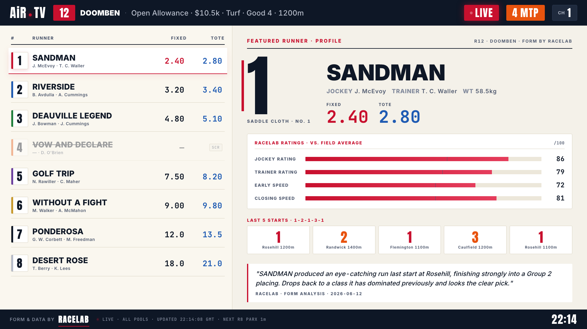
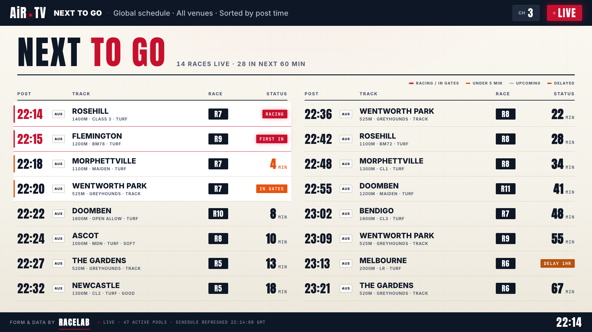
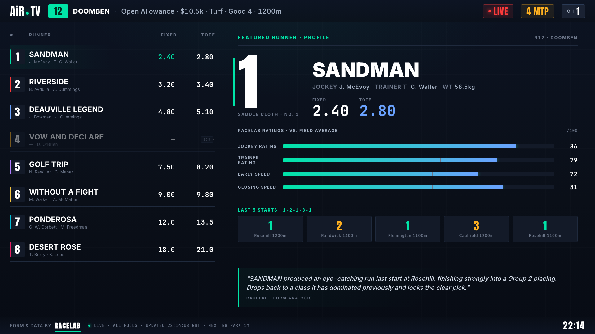

Pilot · 4 screens · 1920×1080RACELAB sponsor anchor
Two themes, two pilot screens each.
The LIGHT theme is built for big Vegas casino sportsbook displays — racing red brand, off-white canvas, dark header/footer bars, oversized numerals. The DARK theme is built for ops consoles, in-app, and lower-light environments — electric mint accent, charcoal canvas. Same design system, two surfaces.
LIGHT · Casino floor variantOff-white canvas · racing red · dark header/footer · oversized type · designed for 75"+ wall displays in lit racebooksPRIMARY · TRY THIS FIRST
001 · LIndividual Runner · Profilerunner board + featured profile + form + ratings

003 · LNext To Go · Schedulemulti-track schedule grid · urgency tiers

DARK · Ops / in-app variantCharcoal canvas · electric mint · lighter weight · for ops console, mobile, low-light referenceREFERENCE
001 · DIndividual Runner · Profilerunner board + featured profile + form + ratings

003 · DNext To Go · Schedulemulti-track schedule grid · urgency tiers